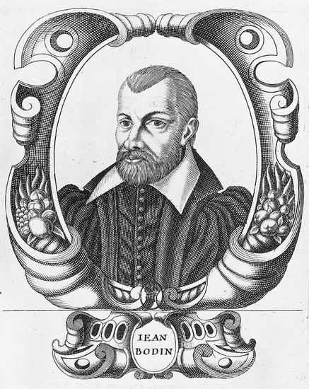
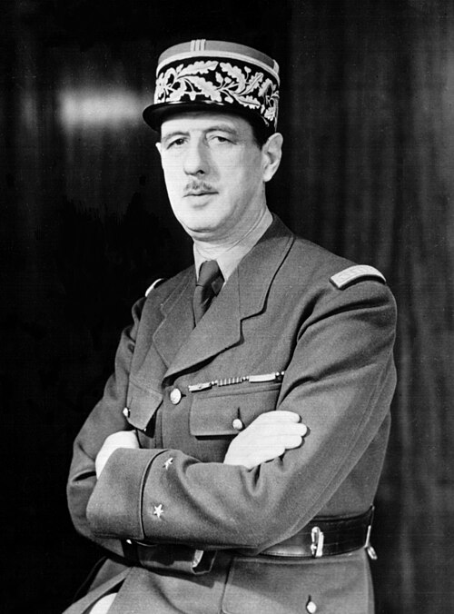
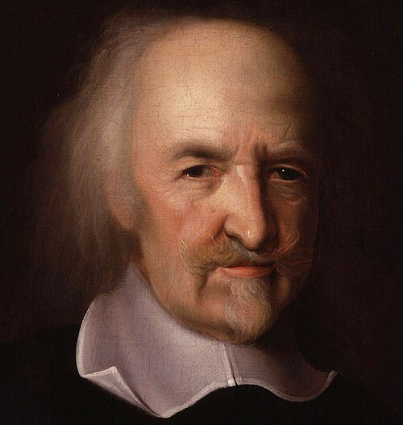
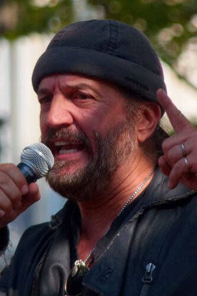

Échelle de décision
Réorienter des institutions supranationales, récupérer certaines compétences ou quitter des organisations sont des projets différents.
COURANT TRANSVERSAL
Courants qui veulent rendre à la nation la maîtrise de ses décisions politiques, économiques et diplomatiques. Ils peuvent aller d’une réorientation de la construction européenne à la sortie de l’Union européenne ou de l’OTAN. C’est un repère transversal : il existe des souverainismes de gauche et de droite, qui ne partagent pas nécessairement un programme social.
HexagoneLa maîtrise des décisions nationales, dans le cadre français du site. Symbole éditorial, sans valeur d’emblème officiel.
LA QUESTION CENTRALE
Réorienter des institutions supranationales, récupérer certaines compétences ou quitter des organisations sont des projets différents.
Protection industrielle, autonomie stratégique et politique sociale peuvent être articulées de plusieurs façons ; le souverainisme ne constitue pas à lui seul un programme économique.
La souveraineté populaire ou nationale n’est pas synonyme de nativisme. Les critères de citoyenneté et le respect des droits permettent de distinguer des démarches pourtant toutes qualifiées de souverainistes.
ORIGINES ET TRANSFORMATIONS
Le souverainisme est ici un repère transversal, pas une famille partisane homogène. Il donne la priorité à la capacité nationale de décider, notamment face aux traités européens, aux dépendances économiques ou aux alliances internationales.
Les travaux de Kriesi et de Hooghe et Marks montrent comment les conflits liés à l’intégration et aux frontières croisent les anciens conflits sociaux. Un souverainisme de gauche peut défendre la capacité de redistribuer ; un souverainisme de droite peut privilégier l’identité nationale. Cette distinction doit rester visible derrière une même étiquette.
DES INFLUENCES À DISTINGUER
La souveraineté traverse les traditions étudiées par Rémond et Julliard : souveraineté de l’État, de la nation et du peuple ne désignent pas exactement la même chose.

La souveraineté comme puissance supérieure de la communauté politique : un jalon de la pensée de l’État moderne.
Éclairage complémentaire : Philippe Nemo et les chapitres indiqués ci-dessous.
Noir et blanc et cadrage appliqués à l’affichage ; les fichiers sources sont conservés sans modification.

Souveraineté du peuple et volonté générale ; des notions discutées dans des traditions de gauche comme de droite.
Éclairage complémentaire : Philippe Nemo et les chapitres indiqués ci-dessous.
Noir et blanc et cadrage appliqués à l’affichage ; les fichiers sources sont conservés sans modification.

Indépendance nationale et capacité de décision de la France, dans une doctrine politique qui n’épuise pas les formes de souverainisme.
Noir et blanc et cadrage appliqués à l’affichage ; les fichiers sources sont conservés sans modification.

La paix et la sécurité comme justification d’une autorité commune : une problématique distincte de la souveraineté populaire. Le chapitre de Nemo sur Hobbes fournit un repère de lecture, sans assimiler les souverainismes actuels à son modèle d’État.
Éclairage complémentaire : Philippe Nemo et les chapitres indiqués ci-dessous.
Noir et blanc et cadrage appliqués à l’affichage ; les fichiers sources sont conservés sans modification.
Ces références n’impliquent ni un même régime institutionnel ni une même politique sociale. Le patriotisme, la souveraineté populaire et le nativisme ne sont pas des synonymes.
Séparer la souveraineté de l’État, l’autorité protectrice et la souveraineté populaire. Bodin, Hobbes et Rousseau posent des problèmes différents ; aucun ne fournit directement le programme européen ou diplomatique d’un parti actuel.
Philippe Nemo, Histoire des idées politiques aux Temps modernes et contemporains, PUF, « Quadrige », 2013 [2002]. Référence complète et périmètre de consultation.
Ces renvois identifient les chapitres utiles. Les extraits accessibles et le sommaire ont été consultés ; ils ne constituent pas une lecture intégrale de l’ouvrage. Cette perspective est croisée avec les autres références du dossier.
DES IDÉES AUX ORGANISATIONS
2 formations dans notre annuaire non exhaustif. Ce rattachement principal ne résume pas toute la diversité interne d’un parti.
Explorer l’annuaire des partis avec ce filtre →PRÉSIDENTIELLE 2027
Le classement personnel est expliqué dans chaque profil. Il peut différer de celui d’un parti ; une ancienne affiliation ne suffit pas à le déterminer.

Union populaire républicaine (UPR)
Fondateur et président de l’UPR, il a été candidat à la présidentielle de 2017.
Profil et programme · ébauche →
France Libre (soutien)
Chanteur et auteur-compositeur, il s’est engagé dans différentes mobilisations politiques, notamment contre le passe sanitaire.
Profil et programme · ébauche →
Sans étiquette
Journaliste et essayiste, ancienne directrice de Marianne et ancienne chroniqueuse d’On n’est pas couché, elle annonce sa candidature sur France Inter.
Profil et programme · ébauche →Cette sélection s’inscrit dans une bibliographie plus large. Les notices précisent ce qui a été consulté et ce que chaque référence apporte ; aucune filiation personnelle n’est déduite d’un seul rapprochement historique.
Méthode et bibliographie complète →